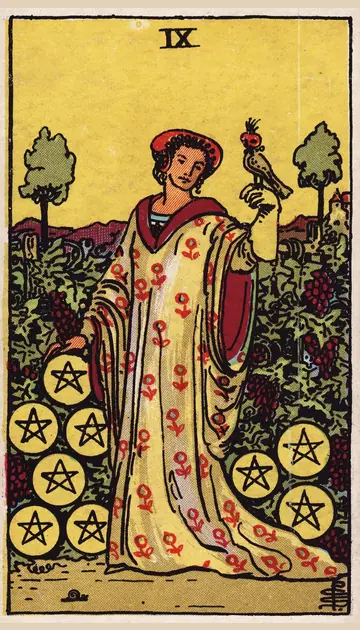

正位置ペンタクルの9の正位置
キーワード：自立・豊かさ・ゆとり
恋愛
自分らしさを大切にしながら、恋を楽しめる時です。
相手の気持ちあなたの自立した魅力に、惹かれているようです。
この先自分らしさを大切にできる恋に、恵まれそうです。
アドバイス自分を磨くことを、楽しみましょう。
気をつけること一人の時間を優先しすぎて、相手を遠ざけないように。
この先自分らしさを大切にできる恋に、恵まれそうです。
アドバイス自分を磨くことを、楽しみましょう。
気をつけること一人の時間を優先しすぎて、相手を遠ざけないように。
人間関係
自立した関係を、築ける時です。
相手の気持ちあなたのことを、尊敬しているようです。
この先心地よい距離感の関係が、続きそうです。
アドバイス相手に頼りすぎず、自分の時間も大切にしましょう。
気をつけること自立しすぎて、甘えるのが下手にならないように。
この先心地よい距離感の関係が、続きそうです。
アドバイス相手に頼りすぎず、自分の時間も大切にしましょう。
気をつけること自立しすぎて、甘えるのが下手にならないように。
仕事・学業
努力が実り、豊かさを味わえる時期です。
この先お金の面で、余裕が生まれそうです。
アドバイス自分の実績に、自信を持ちましょう。
気をつけること満足して、学びを止めないように。
アドバイス自分の実績に、自信を持ちましょう。
気をつけること満足して、学びを止めないように。
お金
お金に、ゆとりが生まれる時です。
この先経済的な余裕が生まれそうです。
アドバイス頑張った自分に、ご褒美を用意しましょう。
気をつけること見栄での出費に気をつけて。
アドバイス頑張った自分に、ご褒美を用意しましょう。
気をつけること見栄での出費に気をつけて。
生活
自分らしく、ゆとりある暮らしを楽しめる時です。
この先満ち足りた暮らしになりそうです。
アドバイス自分のための時間を、楽しみましょう。
気をつけることぜいたくしすぎないように。
アドバイス自分のための時間を、楽しみましょう。
気をつけることぜいたくしすぎないように。
今日の運勢
ゆったりと、心地よく過ごせる日です。
この先満ち足りた時間を過ごせそうです。
アドバイス自分のためのご褒美を、楽しみましょう。
気をつけることぜいたくしすぎないように。
アドバイス自分のためのご褒美を、楽しみましょう。
気をつけることぜいたくしすぎないように。
逆位置ペンタクルの9の逆位置
キーワード：見せかけ・依存・浪費
恋愛
見た目や条件に、とらわれやすい時です。
相手の気持ちあなたに、頼りたい気持ちが強くなっているようです。
この先本当の豊かさに、気づけそうです。
アドバイス相手の内面を、よく見ましょう。
気をつけること相手の条件だけで、判断しないように。
この先本当の豊かさに、気づけそうです。
アドバイス相手の内面を、よく見ましょう。
気をつけること相手の条件だけで、判断しないように。
人間関係
誰かに頼りすぎやすい時です。
相手の気持ちあなたの前で、背伸びをしているのかもしれません。
この先対等な関係に、戻れそうです。
アドバイス自分でできることは、自分でしましょう。
気をつけること依存的な関係にならないように。
この先対等な関係に、戻れそうです。
アドバイス自分でできることは、自分でしましょう。
気をつけること依存的な関係にならないように。
仕事・学業
見栄から、無理をしやすい時期です。
この先堅実にすれば、安定が戻りそうです。
アドバイス身の丈に合った計画を立てましょう。
気をつけること見栄を張りすぎないように。
アドバイス身の丈に合った計画を立てましょう。
気をつけること見栄を張りすぎないように。
お金
見栄から、お金を使いやすい時です。
この先堅実にすれば、安定が戻りそうです。
アドバイス本当に欲しい物か、確かめてから買いましょう。
気をつけること人に頼りすぎないように。
アドバイス本当に欲しい物か、確かめてから買いましょう。
気をつけること人に頼りすぎないように。
生活
見た目を気にして、暮らしに無理が出やすい時です。
この先自分らしいゆとりに気づけそうです。
アドバイス身の丈に合った暮らしを、意識しましょう。
気をつけること人の暮らしと比べないように。
アドバイス身の丈に合った暮らしを、意識しましょう。
気をつけること人の暮らしと比べないように。
今日の運勢
浪費しやすい日です。
この先ささやかな楽しみに、満たされそうです。
アドバイス本当に欲しいものか、確かめてから買いましょう。
気をつけることご褒美のつもりの浪費に気をつけて。
アドバイス本当に欲しいものか、確かめてから買いましょう。
気をつけることご褒美のつもりの浪費に気をつけて。
このページの文章は、アプリ「ひとやすみタロット」の結果に使っている文章です。アプリでは、あなたの相談や、カードが出た位置（今の状況・これからの流れ・アドバイス）に合わせて、この中から文章を選びます。逆位置の読み方は逆位置のことをご覧ください。
「ペンタクルの9」が出たら、あなたの相談ではどう読む？
アプリでは、質問への答えに合わせて、カードの言葉をあなたの相談に合わせて届けます。
Android 対応・会員登録なし